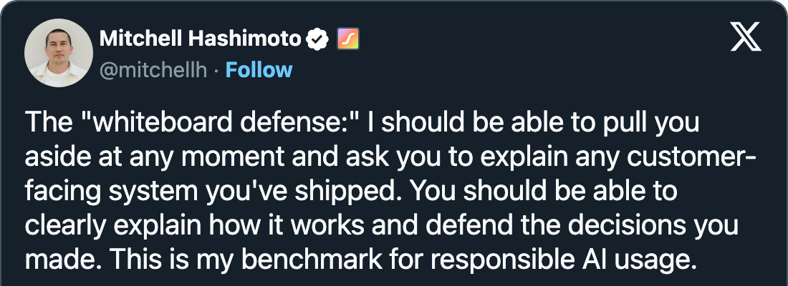

Agentic workflows as state machines, off your laptop.
Rich Snapp
principal software engineer
design system @ MasterControl
open source contributor
Salt Lake City, Utah · writes about AI, devops, and agent workflows
jr: the graph was already there, in bash
richsnapp.com — Automating agents with the next iteration of Ralph
flowchart TD
A[Tasks done] --> B[Architect]
B -->|issues| C[Rework]
C --> A
B -->|approved| D[Human]
D -->|approved| E[Closed]
D -->|changes| C
a deterministic loop on purpose; it worked, but it lived as many lines of bash and was hard to visualize and change
control flow in markdown

- hard to follow the graph is prose, spread across files
- hard to test nothing to run but the agent itself
- still non-deterministic MUST and NEVER are requests, not edges
## Workflow
1. Run the tests. If they fail, go to step 4.
2. IMPORTANT: ask the reviewer for a review.
3. If it asks for changes, go back to step 1.
You MUST loop until it approves.
4. Fix the failures, then return to step 1.
NEVER commit before the review passes.
ALWAYS follow these steps in order.different problems, different workflows
%%{init: {"flowchart": {"rankSpacing": 32, "nodeSpacing": 30}}}%%
flowchart TD
P[Plan] --> T[Next task]
T -->|none left| H([Human])
T --> C[Coder]
C --> R[Reviewer]
R -->|changes| C
R -->|approved| T
%%{init: {"flowchart": {"rankSpacing": 32, "nodeSpacing": 30}}}%%
flowchart TD
I[Idea] --> P[Prototype]
P --> H([Human])
H -->|iterate| P
H -->|keep| S[Spec]
S --> B[Agents build]
%%{init: {"flowchart": {"rankSpacing": 32, "nodeSpacing": 30}}}%%
flowchart TD
O[Do one] --> H([Human])
H -->|redo| O
H -->|approved| F[Fan out]
F --> A[Agent] & B[Agent] & C[Agent]
A & B & C --> J[Review]
jr drew one of these. I did not want to create more bash loops.
a workflow you can read
reviewing: {
invoke: { src: "reviewer", input: reviewerPrompt },
on: {
review_verdict: [
{ guard: approved, target: "closingTask" },
{ guard: "underReviewCap", target: "coding" },
{ target: "#body.escalated" },
],
report_blocked: { target: "#body.escalated" },
},
},
%%{init: {"themeVariables": {"fontSize": "22px"}}}%%
stateDiagram-v2
state working {
direction LR
claimTask --> coding
coding --> reviewing: request_review
reviewing --> coding: changes
reviewing --> closingTask: approved
closingTask --> claimTask
}
[*] --> working
working --> architectReview: chain done
architectReview --> working: changes
architectReview --> openingPr: approved
openingPr --> humanReview
humanReview --> architectReview: request_changes
humanReview --> settled: approve
working --> escalated: blocked · review limit
architectReview --> escalated: review limit
escalated --> working: resume
escalated --> settled: dismiss
settled --> [*]
classDef here fill:#123326,stroke:#4ef0a7,stroke-width:2px,color:#4ef0a7
class reviewing here
Claude wrote it. I review the graph, not the transcript.
a filesystem sandbox is not isolation
one laptop · jr
one filesystem, one set of ports, one set of credentials
one pod per Workspace · jr2
× N — one per feature, gone when the Workspace ends
leaked servers and portsthe pod ends with its Workspace
locks on a shared hostown ports, filesystem, processes
agent and user share credentialscredential kept in the Adapter
one host is one host
one laptop · jr
one build starves the rest
a cluster · jr2
node-1
Orchestratorpodnode-2
podpodnode-3
poda Sandbox lands wherever an ordinary pod can
one agent starves the restmore nodes, more room
stops when the lid closeskeeps running with it closed
reachable from this laptopone address for every caller
headless: every UI can be a client
Orchestrator · HTTP
POST /workflows/:name/runs
GET /runs/:id/events
POST /runs/:id/gates/:gate/events
GET /workflows/:name/machine
jr2 is infrastructure. The UI is whatever calls it.
bring your own cluster, or use kind
$ kind create cluster # or any kube context
$ jr2 init agents && cd agents && npm i
$ jr2 up
$ jr2 run pingexport default defineConfig({
registry: process.env.JR2_REGISTRY, // unset on kind
harness: {
env: [{ name: "ANTHROPIC_API_KEY",
value: process.env.ANTHROPIC_API_KEY }],
},
git: { credentials: [{ match: "*", token: "JR2_GIT_TOKEN" }] },
});jr2 up converges safe to re-run
- typechecks the Instance before it builds
- installs the operator and its CRDs
- builds every image, then kind loads or pushes it
- deploys the Orchestrator and its Secrets
- probes a custom model endpoint in-cluster
you bring jr2 won't help here
- a cluster; off kind, a container registry
- Node 24, Docker, kubectl
- a model: an API key or your own endpoint
Convention over configuration. One command, no runbook.
the whiteboard defense

every decision in jr2 is written down: the context, the choice, and what it costs
- 0001 Sandboxes are provisioned by a Kubernetes operator via a generic CRD
- 0002 The agent actor is a duplex channel; its control plane is MCP tool calls
- 0004 A Sandbox's workspace is a private local clone of a read-only cache, not a shared worktree
- 0005 The Sandbox pod's containers: Harness, Adapter, and an optional User Container
- 0006 The agent picks from a Machine-defined, schema-backed menu; it does not drive the workflow
- 0007 Durable Machine state: serializable context, live things constructed from input
- 0008 jr2 is a library + CLI; an Orchestrator instance hosts many workflows
- 0009 The
jr2CLI and instance interface - 0010 BDD acceptance tests via Cucumber.js (black-box, scenario-isolated)
- 0011 Control events are workflow-defined and delivered by closure, not routed
- 0012
workspace()wraps a body Machine and owns only Sandbox lifecycle - 0013 The Agent's MCP surface lives in the Sandbox, not the Orchestrator
- 0014 Observation is open; run state and control need the Instance token
-
0015 Workflows are authored through
jr2Setup; vocabulary and agent menus derive from the machine - 0016 Agent-turn mechanics are jr2-internal: ambient coordinates, host-side offsets, absorbed retries, fresh sessions
- 0017 The run loop is a jr2
poolover a generalized source port - 0018 The instance authors Agent definitions; jr2 assembles the Harness
- 0019 The operational surface is one converging command against the current kube context
- 0020 Private-CA trust is a named concept, not volume plumbing
- 0021 Workspace continuity is a lease that answers back
- 0022 Observation is a level-triggered feed, and an API before it is a page
- 0023 The Harness prints the conversation, and the reasoning is the part that prints
- 0024 An Agent's turn ends with the state that asked for it
- 0025 CANCEL ends a run; stopping one parks it
- 0026 A turn that is over has an empty menu, not an error
- 0027 The Harness is jr2's own server: flue retires, the wire stays
- 0028 What an Agent may do to the Workspace is part of its definition
- 0029 A menu offers what the Machine will accept, and a pick that moves nothing says so
- 0030 A snapshot names the Machine it was written under
- 0031 Menu-only Agents run on the Instance Harness
- 0032 The Console unlocks with the Instance token, and the bands do not move
- 0033 A Machine declares the input that starts it
- 0034 The Console renders with Preact, and the server erases the types
- 0035 A runaway turn is ended by the Harness, rerolled once, then a fault
- 0036 A turn compacts its own context mid-flight
- 0037 A Sandbox Image is built or brought; jr2 injects the Harness at pod time
- 0038
jr2 upbuilds every image it deploys - 0039 Image garbage collects by reachability
- 0041 A build the host already holds is not spent again
- 0042 Ready is not routable: the two calls a turn starts with re-ask a Service that has not answered
- 0043 The kit is tested as installed: a local registry stands in for npm
- 0044 Kit images live at a canonical home; a self-host mirrors it
- 0045 The platform joins the image address, and the cluster chooses it
- 0046 A converge failure carries its diagnosis
- 0047 The git ssh key source is the user's choice
- 0048 The Orchestrator boots without its repos
- 0049 A Machine carries its parts and composes by invoke
- 0050 What code names, config declares; what the CLI names, discovery finds
- 0051 A Repo is a slot on the
workspace()and a cache on the node - 0052 A Sandbox lands where an ordinary pod lands, and the cache follows it
- 0053 A fetch inside the pod asks the node cache, and the cache asks the remote
- 0054 The kit ships Machines, and a shipped Machine leaves its parts Open
- 0055 A release is a pushed tag, and the publish guard is the credential
-
0056 A global
jr2hands off to the Instance's own, and an Instance has one Kit version - 0057 A Turn is its Frame, its Dials, and whether it continues
- 0058 A Harness answers the Orchestrator alone
Watch it run, then ask why.
the instance, on disk
jr2.config.ts— what this deployment can reachworkflows/—ping,triage,taskimages/default/— what a Sandbox is made of
ADR-0009 · ADR-0019 · ADR-0050
one converging command
Idempotent. Every image reports what it did not have to do.
ADR-0019 · ADR-0038 · ADR-0041
what is running before any run
the Orchestrator, the operator, the Instance Harness; no Sandbox
a Machine and nothing else
No Agent. No Sandbox. No model. The run is the machine moving.
ADR-0011 · ADR-0022
the model picks; the Machine drew the edges
A Menu-only Agent. Its Menu is accept, needs_info, reject — and a
pick outside them moves nothing.
ADR-0015 · ADR-0029 · ADR-0031
the human answers; the model picks again
answer is the Gate's alone — no Agent state can offer it
ADR-0011 · ADR-0015
accepted, restated
the summary is the next workflow's prompt
no pod appeared
isolation is spent only where code runs
now the one with an Agent in it
Detached on purpose — it will park at a Gate and wait for me.
ADR-0012 · ADR-0018 · ADR-0028
the pod that just appeared
Harness, Adapter, User Container
ADR-0005
one Turn, start to end
talk while the run works toward its Gate
ADR-0024 · ADR-0057
parked
The Gate names the decision and exactly the events it will accept.
ADR-0011 · ADR-0026 · ADR-0029
say no
A workflow-defined event. Another Turn, same Workspace.
ADR-0011 · ADR-0021
say yes
The Workspace goes. The Machine never pushes.
ADR-0021 · ADR-0028
the pod is gone
the Workspace ended with the run
one pod, three containers
Harness
your Sandbox Image + /opt/jr2
the conversation, the model calls, the Working tools: read, write, bash
the Agent's code runs here
Adapter
jr2-adapter
an MCP server with this Turn's Menu; sends the pick to the Orchestrator
holds the Orchestrator credential, where the Agent cannot read it
User Container optional
your image, your entrypoint
e.g. an sshd, a forwarded ssh agent
jr2 never builds, probes, or commands it
the Workspace, set up by the Orchestrator: a clone off the node's repo cache, then a branch worktree. No git credential in the pod: a fetch asks the cache, and a push has none.
The Agent writes the code. It never holds the keys to git or the Orchestrator.
your image, byte for byte
FROM node:24-slim
# the floor: glibc and git
RUN apt-get update \
&& apt-get install -y git ca-certificates
# your agents' toolchain: compilers, CLIs,
# language servers, dotfiles
RUN …-
the default
images/default/Dockerfilejr2 upbuilds it and tags it by content -
beside a Machine
workspace(body, { image: import.meta.resolve("./image") })a package ships its image with its Machine -
brought
customize(task, { image: "ghcr.io/you/toolchain:1.4" })an image you bake and host; jr2 never builds it
At pod start jr2 mounts its runtime at /opt/jr2: the Harness, built on the pi agent
toolkit. It adds no layer to your image, and your tools win on PATH.
You own the toolchain. jr2 brings the Harness.
what a Machine is made of
const needsInfo = defineEvent({ 2
name: "needs_info", audience: "agent",
input: z.object({ question: z.string() }),
});
jr2Setup({
events: [accept, needsInfo, reject, answer],
actors: {
triager: agent({ 3
model: "local/qwen3.6-35b-a3b",
workspace: "none",
instructions: "You triage feature requests…",
}),
},
}).createMachine({
input: z.object({ request: z.string() }), 1
states: {
triaging: { 4
invoke: { src: "triager" },
on: { accept: "accepted", needs_info: "clarify", reject: "rejected" },
},
clarify: { invoke: { src: "gate" }, on: { answer: "triaging" } },
accepted: { type: "final" }, rejected: { type: "final" },
},
});- input a schema for what starts a run. The Console draws its start form from it.
- events typed, with an audience: an Agent's picks and a human's answers never mix.
-
agents
model, instructions, workspace access.
"none"can read and pick, nothing else. -
states
invoke an Agent: the state's
onbecomes its Menu, served as MCP tools. invoke agate: the run waits for a human.
Choose your own adventure: the Agent picks where it goes next, from defined states.
Machines compose
import { task } from "@jr2/machines";
export const machine = customize(task, {
repos: {
target: { url: "http://seed…/greet.git" },
},
agents: {
coder: { model: "local/qwen3.6-35b-a3b" },
},
});jr2 up refuses and prints this lineconst coding = customize(task, {
repos, agents,
});
jr2Setup({ actors: { triager, coding } })
.createMachine({
states: {
building: {
invoke: {
src: "coding",
input: ({ context }) => ({
prompt: context.summary,
branch: `feat/${context.slug}`,
}),
},
},
},
});export const machine = customize(
pool(task, {
source: source({
// the next ready ticket, or null
next: fromPromise(({ input }) =>
tracker.next(input.active)),
}),
itemId: (t) => t.id,
cap: 3,
itemInput: (t) => ({
prompt: t.body,
branch: `ticket/${t.id}`,
}),
}),
{ repos, agents },
);Loop engineering? How about state machine engineering?
any model, chosen per Agent
harness: {
// one OpenAI-compatible endpoint:
// llama.cpp, vLLM, Ollama, …
provider: {
id: "local",
api: "openai-completions",
baseUrl: process.env.JR2_PROVIDER_URL,
},
// keys for the built-in catalog:
// anthropic, openai, google, …
env: [{
name: "ANTHROPIC_API_KEY",
value: process.env.ANTHROPIC_API_KEY,
}],
},-
per Agent
agent({ model: "anthropic/claude-sonnet-4-6" })the definition: who the Agent is -
per Turn*
input: { prompt, model: "local/qwen3.6-35b-a3b" }a state turns the dial: a cheap model for a small step -
per run
jr2 run task --input '{ "prompt": "…", "model": "…" }'when the Machine takes it as input:taskdoes
* a switch mid-conversation starts cold: the new model has no prompt cache
The kit never picks a vendor. You pick the model.
a run outlives its Orchestrator
the Sandbox is alive
re-attach: the same pod, and the Turn resumes its stream
the Sandbox is gone
workspace.lost goes to the Machine; nothing is silently rebuilt
the Machine was edited
refused, kept, and announced: the snapshot names its Machine
the Harness died
agent.fault goes to the Machine; task parks at its Gate
Kill the Orchestrator mid-Turn. The run picks up where it was.
the Adapter injects every key
- holds the Orchestrator credential
- serves the Menu
share a Machineits tools come along; your keys stay home
always-on agentsOpenClaw- or Hermes-style, keys out of reach
- holds the Orchestrator credential
- serves the Menu
- holds external keys at runtime: model, tools
- a proxy for outbound calls: a key goes only to its host
not a vault: it reads Kubernetes Secrets, so fill them from Vault with External Secrets Operator, or any store
undecided: jr2's own proxy, or Envoy's new credential injector
Add external tools, and the Agent never holds a key.
memory, messaging, and more
one reusable Machine that wraps any Agent's work
actors messaging actorsxstate actors can send each other events; jr2 would adopt that for Agent
to Agent, or for a human who steers an Agent gone astray. The agent actor already takes xstate events
(today only CANCEL), so a message between Turns fits.
workflows start workflowsa Menu item that asks the Orchestrator to start another run
Agents are good at one small thing. Let the Machine do the rest.
Agents that write runtime Machines
const plan = await agent("plan it");
for (const step of plan.steps) {
const r = await agent(`do ${step}`);
if (!r.ok) break;
}planning: {
invoke: { src: "planner" },
on: { planned: "working" },
},
working: {
invoke: { src: "coder" },
on: { done: "review", blocked: "escalated" },
},maybea Machine fills part of its body with a Machine an Agent wrote at runtime
maybea prompt becomes a workflow: an Agent writes the Machine, then jr2 runs it
Agents are good at writing Machines. The types catch mistakes before the run.
questions?
try it
npm i -g @jr2/cli
jr2 init my-agents
jr2 upgithub.com/snapwich/jr2 · CONTEXT.md for the words · docs/adr for the whys